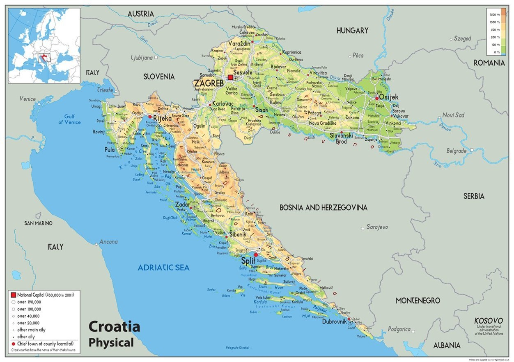

Das Relief Kroatiens ist sehr vielfältig. Jedoch wird Kroatien in 3 Ebenen unterteilt. Die Tiefebene, die Gebirgsregion und die Küstenregion.
Hier wird es im Gegenteil zum Norden, zur Küste hin immer bergiger. Allerdings weist Kroatien eine generell flache Oberfläche auf.
Ungefähr 53% der Fläche, liegt 200m unter dem Meeresspiegel und nur 21% 500m darüber.
Ein Teil des dinarischen Gebirges verläuft durch das Land und der höchste Punkt Kroatiens ist der Gipfel Sinjal mit 1831m.
